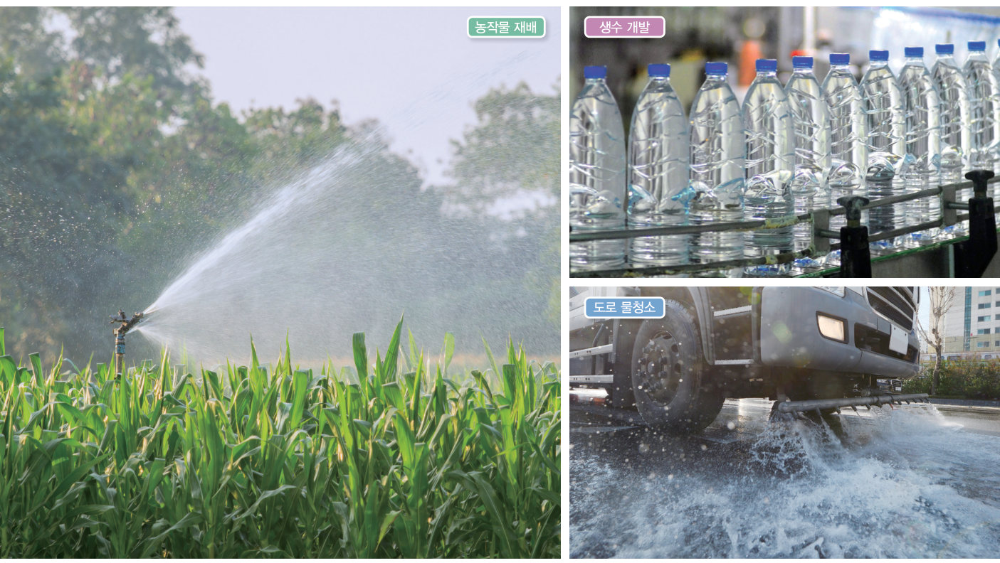
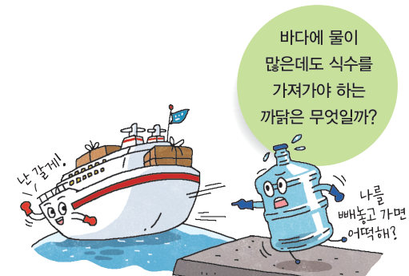
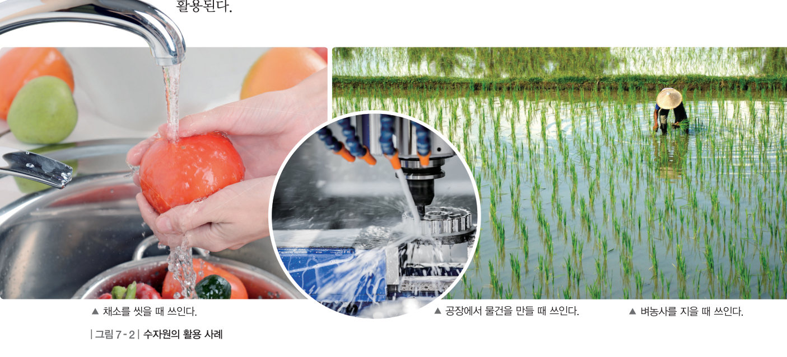
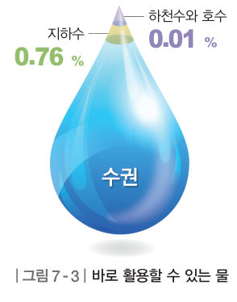
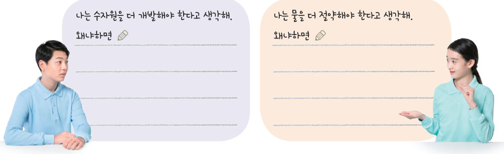
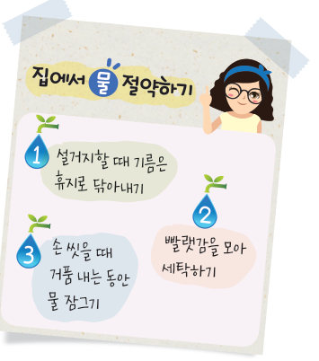

바다에 물이 많은데도 식수를 가져가야 하는 까닭은 무엇일까? 해수·빙하·지하수·하천수의 활용 사례를 분류하고, 자원으로서 물의 가치를 토론한 뒤, 물 사용량 계산기로 우리 집 물 절약 생활 수칙을 만들어 보자.
물은 생명을 유지하는 데 필요할 뿐만 아니라, 일상생활이나 각종 산업 활동 등의 다양한 분야에서 활용되는 자원이다. 이와 같이 사람이 살아가는 데 활용하는 물을 수자원이라고 한다. 우리는 주로 짠맛이 나지 않는 담수를 활용한다.
| 짠맛을 제거하여(담수화) 사막에서 작물을 재배한다. | |
| 섬 지역에서 바닷물을 담수로 바꾸어 식수로 쓴다. | |
| 담수가 부족한 고산 지대에서 녹은 물을 생활용수로 쓴다. | |
| 녹은 물로 생수와 화장품을 만든다. | |
| 땅속에서 끌어올려 농작물 재배와 도로 물청소에 쓴다. | |
| 가뭄이 잦은 지역에서 땅속 물을 식수로 쓴다. | |
| 댐에 모아 수돗물로 정수하여 각 가정에 보낸다. |
하천수, 호수, 지하수와 같은 담수는 우리가 바로 활용할 수 있지만, 해수와 빙하는 바로 활용하기 어렵다. 해수는 짠맛을 제거하여 담수가 부족한 지역에서 활용한다. 빙하가 녹아 액체 상태가 된 물을 담수가 부족한 고산 지대에서 활용한다. 담수는 생활이나 농업 활동, 공업 활동 등에 다양하게 활용된다.

| ⑴ 생활 | |
| ⑵ 농업 | |
| ⑶ 공업 |
수권에서 바로 활용할 수 있는 물은 하천수, 호수, 지하수 등이고 그 양은 매우 적다. 우리는 지표면에 드러나 있는 하천수와 호수를 주로 활용하고 있으며, 부족하면 땅속의 지하수를 끌어올려 활용한다.
지하수는 땅속 지층이나 암석 사이의 빈틈을 채우고 있거나 매우 느리게 흐르는 물이다. 지하수는 하천수나 호수보다 많은 양이 분포하고 있다. 또, 빗물이 지층의 빈틈으로 스며들어 채워지기 때문에 지속적으로 활용할 수 있다. 따라서 지하수는 수자원으로서 가치가 높다. 지하수는 농작물 재배, 생수 개발, 도로 물청소에 활용하기도 한다. 특히, 가뭄이 자주 발생하는 지역이나 섬에서는 식수로 활용한다.

인구가 늘어나고, 산업이 발달하여 삶의 질이 향상되면서 필요한 물의 양은 점점 많아지고 있지만, 바로 활용할 수 있는 물의 양은 한정적이다. 물은 우리에게 소중한 자원이다. 그런데 최근에는 활용하는 물의 양이 늘어나고 있고, 이에 따라 오염되는 물의 양도 늘어나고 있다. 따라서 수자원의 개발과 함께 물의 오염을 방지하고, 물을 절약하며 효율적으로 활용하려는 노력이 필요하다.


| ⑴ 해수는 수자원으로서 가치가 없다. | |
| ⑵ 하천수는 수자원으로 바로 활용할 수 있다. | |
| ⑶ 빙하는 녹은 물을 수자원으로 활용한다. |
첫 번째 열쇠: 빙하가 녹은 물은 짠맛이 나지 않는 담수이다. · 두 번째 열쇠: 담수가 부족한 고산 지대에서는 빙하가 녹은 물을 생활이나 농업 활동, 공업 활동 등에 활용한다.
| 평가 기준 | 스스로 평가 |
|---|---|
| 해수, 담수, 빙하의 활용 사례를 조사하여 설명할 수 있다. | |
| 자원으로서의 물의 가치에 대해 토론할 수 있다. | |
| 물 절약 생활 수칙을 만들고 실천하려고 노력하였다. |